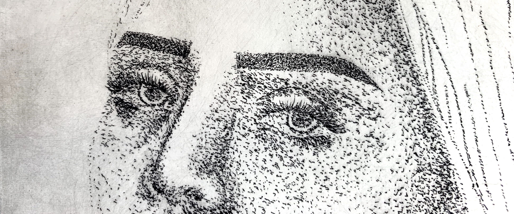

About me

Carla Sunji is a digital product and graphic designer currently pursuing an MPS degree in Digital Product Design at Parsons School of Design in New York City. She graduated with a BFA in Graphic Design from the American University of Beirut in Lebanon. She enjoys all things related to print design including printmaking (check out my stuff on Behance for more).
She worked for a multidisciplinary design consultancy in Beirut for 2 years where she collaborated and worked on branding and corporate identity design, analysis and strategy as well as wayfinding and signage design to create experiences for cultural and historical institutions in the Gulf region.
She loves understanding psychology and hopes to tie her work experience in signage design and current studies in UX/UI together to create unique experiences that cater to user’s needs through understanding their behaviors and habits.